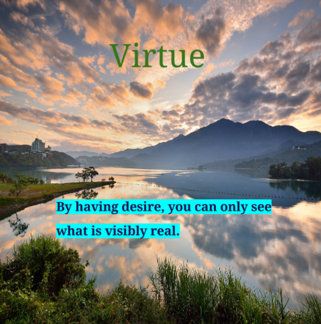

Challenge:Design A Band
Challenge Information
Design thinking is when designers try to find solutions for a client. we are studying this because we are trying to imply it with the real world. Steps of the DEEP design thinking process are creating an A-B test were you have two choices and show them to people, so that can choose which one is better or which one they prefer. We use empathy in this challenge because we not only want ourselves to appreciate our cover, but also the other people who are seeing this. First we looked at san serif and serif fonts to see which one we prefered and then we looked at abstract and realistic pictures to decide which one was better. We also looked at different colors to see which one pops to us. After we went through the band process were we got many random articles to come up with our Band Name and Album Name. After, we chose pictures that other people would enjoy by creating an A-B test with two album prototypes. We also then did something called the rose, thorn, and bud testing. This means that we went around in class after choosing our final cover and looked at the positive things about the cover (rose). Also the thorn; which that is the negative things about this cover or what can be improved. again we looked at buds. Buds are the knew ideas you get from looking at this cover. Then we put this onto our website on c9 either using the beginner's starter code or the intermediate starter code or without starter code (hard). It would be yur choice based on how you felt.
Album Cover
Band Biography
Virtue is a band of five. The band members were called Jacob Virtue, Alec Virtue, Jace wayland, Tyler Joseph and Josh Dun which is an alternative hip hop band. The ones who mainly created and started this band were Jacob and Alec. That is why the band is named virtue. Not just that, but it has a nice ring to it and everyone agreed to it. This band started off as a club in a school called Alpha Cindy Avitia. This club was called the Innovative creative hustlers. No one wanted to join this group because they thought it was lame and not cool. Except of course the virtue twins, they had joined, which if you didn't know, they were the popular twins in the school. They were brave enough to even recruit people and do advertisements to get people to join them. Eventually they made auditions inside of the Alpha auditorium; were many people you wouldn't imagine coming came. All this because they knew if the cool kids did something they would join too.
In these auditions a variety of people using different instruments. Of course, they chose the best they could find. These people were Jace Wayland, Tyler Joseph, and Josh Dun. Each played different instruments like the ukelele, piano, drums, a variety of differeny guitars, etc. Together they decided to do performances in school after the principal had said they were a great bad. After performing at different schools a music producer happened to be at one of the schools and said "you guys are great you guys should start a band and sign this contract to become famous." They said yes and they were excited. There first gig was at this birthday party, which wasn't that great as they had said. They said not many people went and the place was tight. As any band, not al first gigs are great. They then later got another big call to play at this mall. As you may know there are many people in a mall and many people were asking "who are they." They decided to called themselves "VIRTUE" They were called again to join this major group that was called "M&G". There they were soon to find theirsleves in a concert type thing of many bands that were also starting there track to fame as well. They just started getting many big gigs and then they got many fans. As a result of this, the producer decided that they were to create an album. This album was going to be named "by having desire you can only see what is visbly real." They had uused a picture of the background were there school was located since they wanted to take it back to were they had started as a mini club with rusty instruments. After their album had been released they ahd finally got to the moment were they were known from all over the world; which meant they were soon to create a world tour.
To hear track one of the new album, check out the following link: House Of Gold This is one of the many great songs that we have created. You should listen to all of them.